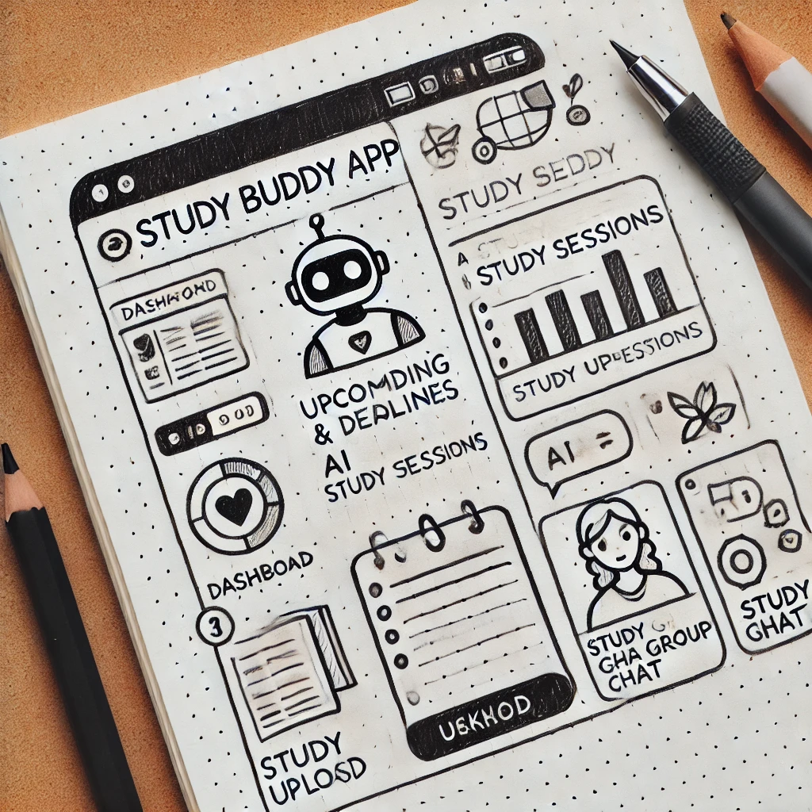
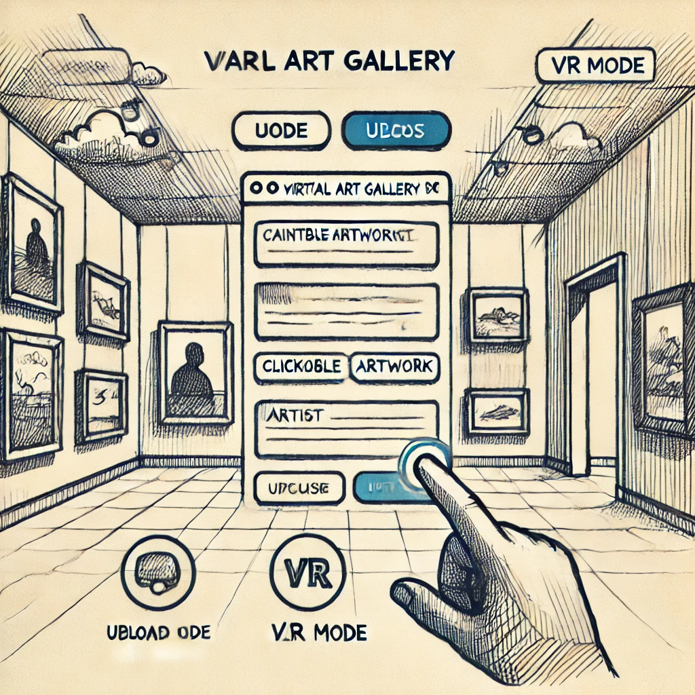
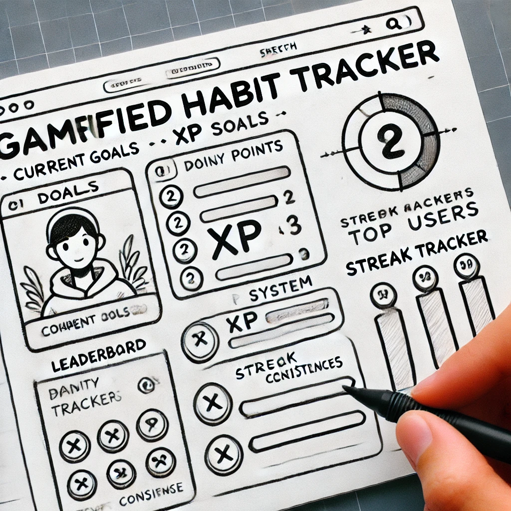

Team Project Ideas
1. Study Buddy App (AI-Powered Study Organizer)
Managing studies efficiently is crucial for students. Our **Study Buddy App** will provide a **smart AI assistant** that helps students organize their tasks, create schedules, and answer study-related questions. It will allow users to **upload notes, collaborate in study groups**, and get instant responses to academic queries. The app will make studying more interactive and efficient.
2. Virtual Art Gallery (Interactive 3D Web Experience)
Art should be accessible to everyone. Our **Virtual Art Gallery** will allow artists to **showcase their work online** in a fully interactive **3D web environment**. Viewers can explore different rooms, zoom in on paintings, and learn about artists. The gallery will also have a **buy/sell** feature, enabling artists to monetize their work. This project blends **technology, creativity, and accessibility** in a unique way.
3. Gamified Habit Tracker (Daily Goals & Challenges)
Building good habits is difficult, but **gamification** can make it fun! Our **Gamified Habit Tracker** will turn daily habits into an interactive game. Users can **set goals, complete challenges, and earn XP points** as they progress. A **leaderboard** will add friendly competition, and rewards will motivate users to stay consistent. This project promotes **self-improvement and engagement** in an exciting way!